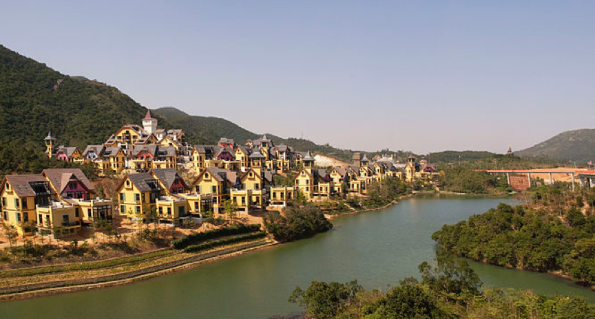
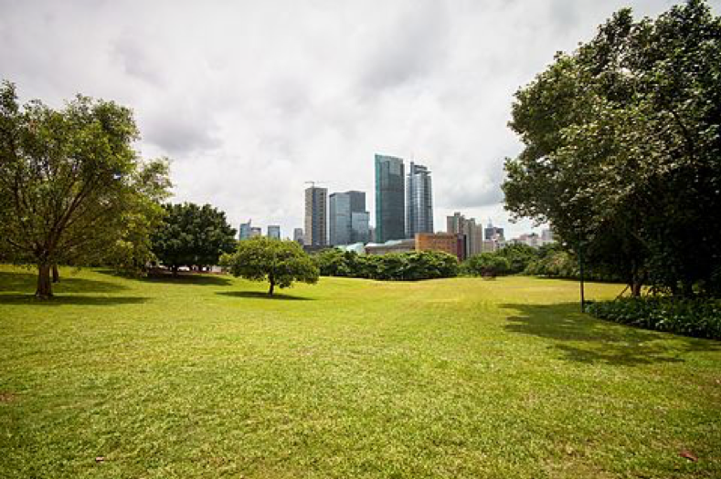

Local Information
Shenzhen is one of the most incredible city in China. It is the first special economic area in China and the window of China's reform and opening up. It has developed into a modern international metropolis with increasing influences. It has created the world-famous “Speed of Shenzhen” and enjoys the fame of "City of Fashion", "City of the City", "City of Volunteers" and so on. Its tourisms mainly include:
Overseas Chinese Town (OCT)
The OCT East development in Yantian District is also an events hotspot, featuring the Ecoventure Valley (大侠谷) and the Tea Stream Resort Valley (茶溪谷) theme parks, three scenic themed towns, two 18-hole golf courses and eight themed hotels. OCT East was joined in 2012 by the OCT Bay (欢乐海岸) development in Nanshan, which brought more attractions including an exhibition center, hotels and residences, an artificial beach called CoCo Beach, and an IMAX cinema.
Shekou
Shekou is a former industrial zone with a largely expatriate residential community, also home to a large shopping district called Sea World (海上世界) where a former French cruise liner Minghua (明华), (known in French formerly as MS Ancerville) is cemented into the ground to become a hotel complex. Shekou was expanded and renovated in recent years, partially via land reclamation.

Lianhuashan Park
Lianhuashan Park is a hill and urban park in Shenzhen, China. It is located at the northern end of the Futian Central Business District and covers an area of 150 hectares. Atop the 106-metre hill is a large bronze statue of Deng Xiaoping. It is within walking distance from Children's Palace Station of the Shenzhen Metro.
Beaches
Beaches in Shenzhen include Dameisha and Xiaomeisha in Yantian and Xichong Beach in the south of Dapeng Peninsula.
BMuseums and exhibition centers
- Shenzhen Convention and Exhibition Center
- Shenzhen Civic Center
- Shenzhen Cultural Center, where the city's Central Music Hall and library are located
- He Xiangning Art Museum
- Guan Shanyue Art Museum
- OCT Contemporary Art Terminal